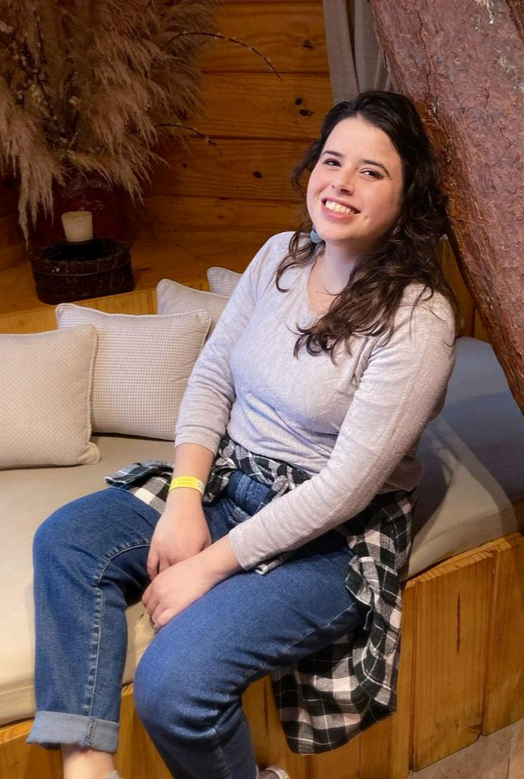

🕊️
Autoconhecimento
Entender o que está além do que você já conhece
Esse site foi uma demonstração da Generation IA Tech. Fale com a gente pra ativar a versão definitiva, com domínio próprio.
Falar no WhatsAppSe você sente a necessidade de mergulhar em si mesma e descobrir o que habita além do que você já conhece, estou aqui para te escutar.

Me conte um pouco de como prefere começar, e eu te chamo no WhatsApp pra combinarmos o melhor horário.
Primeiro contato para alinhar horário e valores
Primeiro encontro para nos conhecermos e entender sua demanda
Encontros regulares por videochamada, no seu horário
Acompanhamento contínuo, no seu tempo
A psicanálise não trabalha com fórmulas prontas — cada processo é único. Estes são alguns dos temas que costumam trazer as pessoas ao consultório.

Entender o que está além do que você já conhece

Um espaço ético e seguro para a sua fala

Colocar em palavras o que ainda não tem nome

Mudanças de rota, recomeços, novas escolhas
Entender o que está além do que você já conhece
Um espaço ético e seguro para a sua fala
Colocar em palavras o que ainda não tem nome
Mudanças de rota, recomeços, novas escolhas

Quando a mente não desacelera

Elaborar o que dói, no seu tempo

Reconstruir a relação com você mesma

Cuidar de si com mais gentileza
Quando a mente não desacelera
Elaborar o que dói, no seu tempo
Reconstruir a relação com você mesma
Cuidar de si com mais gentileza
5 anos de formação na UNIP, com prática clínica pautada pela psicanálise.
Sessões por videochamada, com a mesma qualidade de escuta de um consultório.
10 anos em RH e Recrutamento & Seleção antes da psicologia — entende as pressões da rotina de trabalho.
Atendimento conforme o Código de Ética Profissional do Psicólogo — CRP 06/230949.
Primeiro encontro para nos conhecermos, sem compromisso de continuidade.
Um espaço seguro para que sua história singular possa emergir.
"A análise não é apenas sobre entender o passado; é sobre criar um espaço onde o 'ser' possa finalmente emergir."— Ianka Machado, Psicóloga · CRP 06/230949
Minha trajetória na Psicologia não começou no primeiro dia da graduação, mas no desejo que, por mais de uma década, foi cultivado nos bastidores de uma carreira sólida em RH. Durante 10 anos, transitei pelo universo das organizações e do Recrutamento e Seleção, onde pude observar de perto as complexidades das relações humanas e as pressões da produtividade.
Foi no silêncio da pandemia que a necessidade de um espaço de fala mais autêntico se tornou inadiável. Foram cinco anos de formação rigorosa na UNIP, conciliando a rotina corporativa com a rotina acadêmica. Hoje integro essa experiência no mundo do trabalho com a prática clínica pautada pela psicanálise.
+55 11 92525-9049
psi.iankamachado@gmail.com
CRP 06/230949
Todas as sessões acontecem por videochamada. Depois do primeiro contato, combinamos juntas o melhor dia e horário — você recebe o link da sessão com antecedência, de onde estiver.